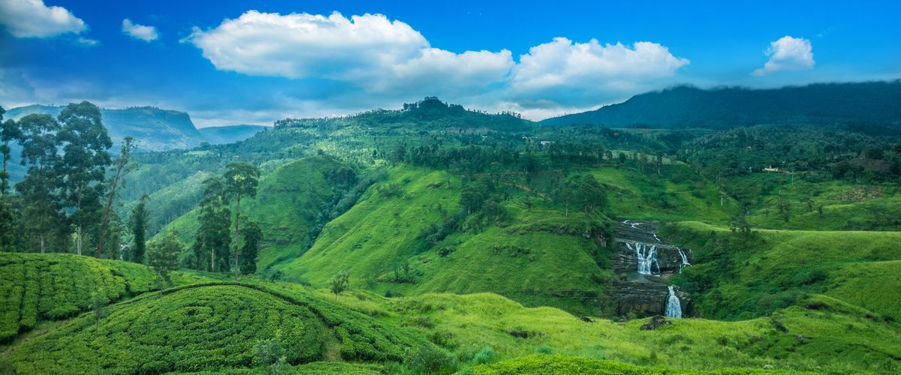
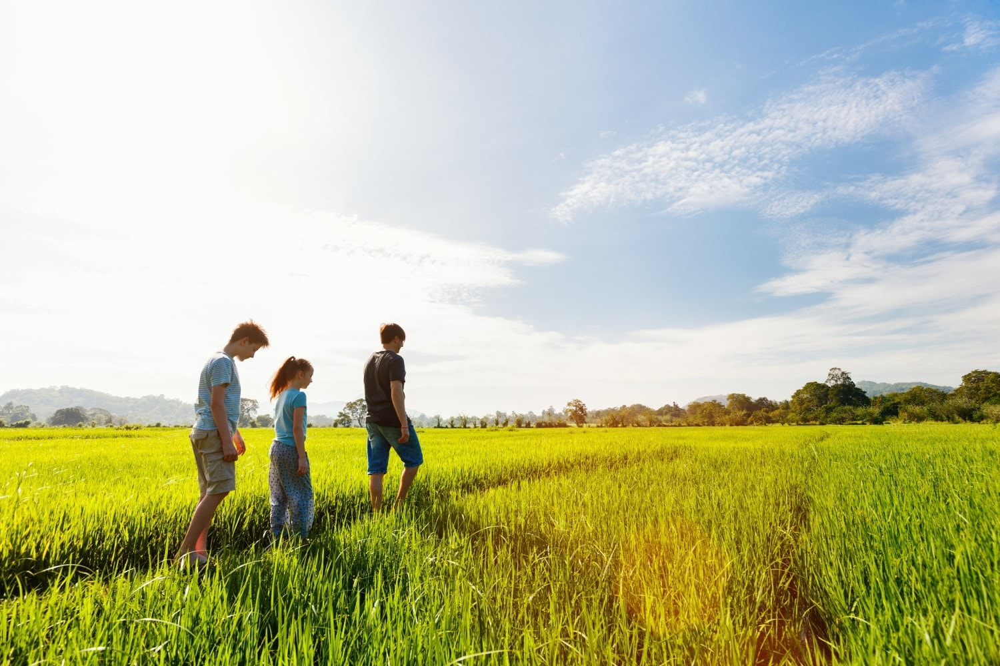
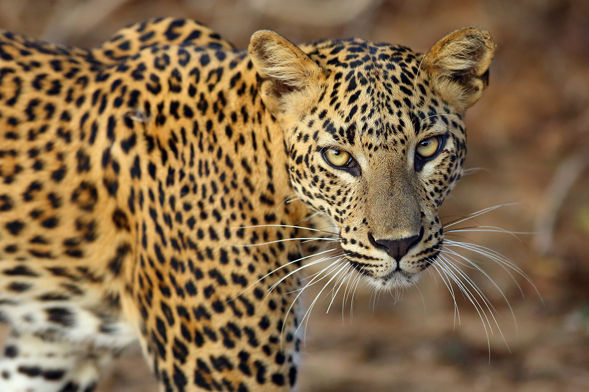
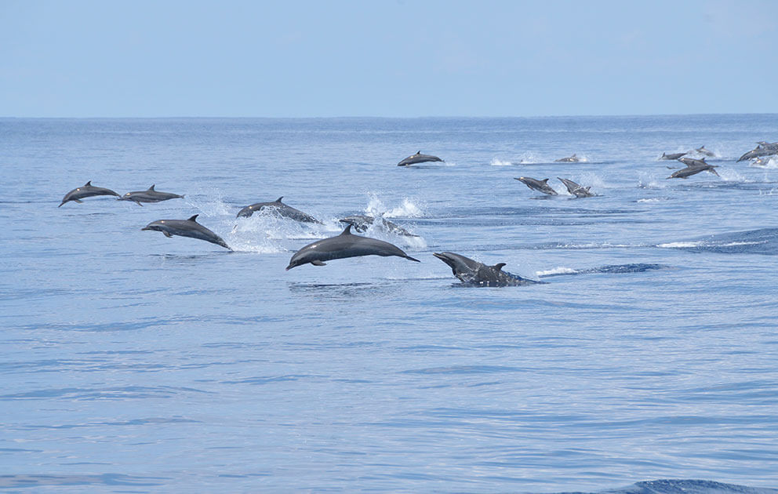
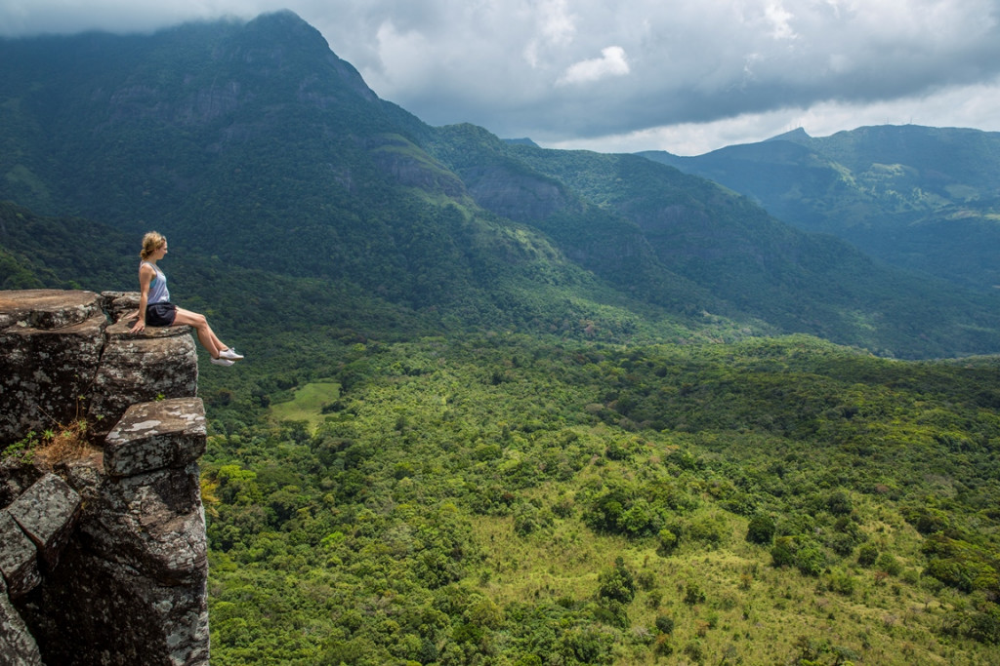
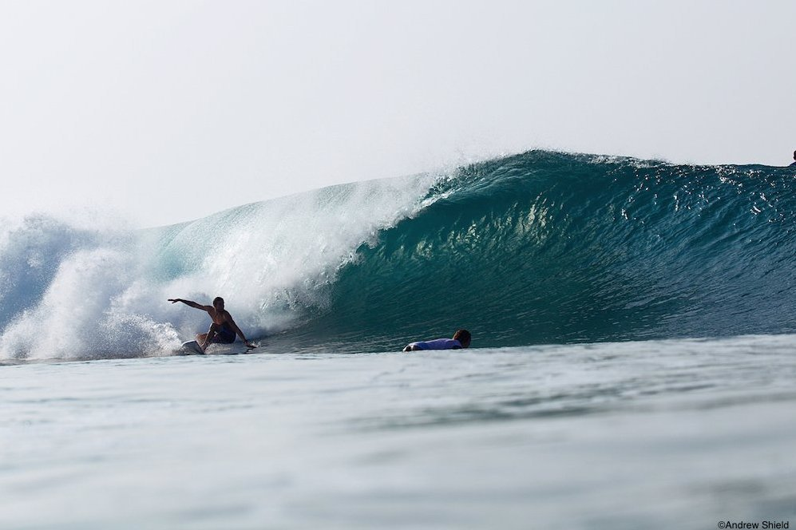
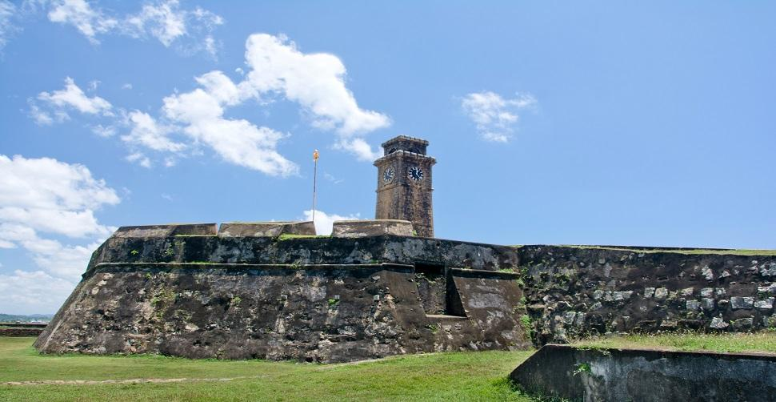
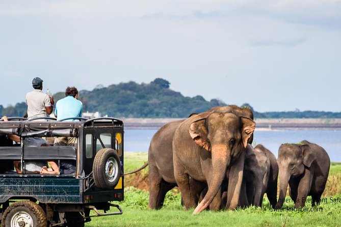
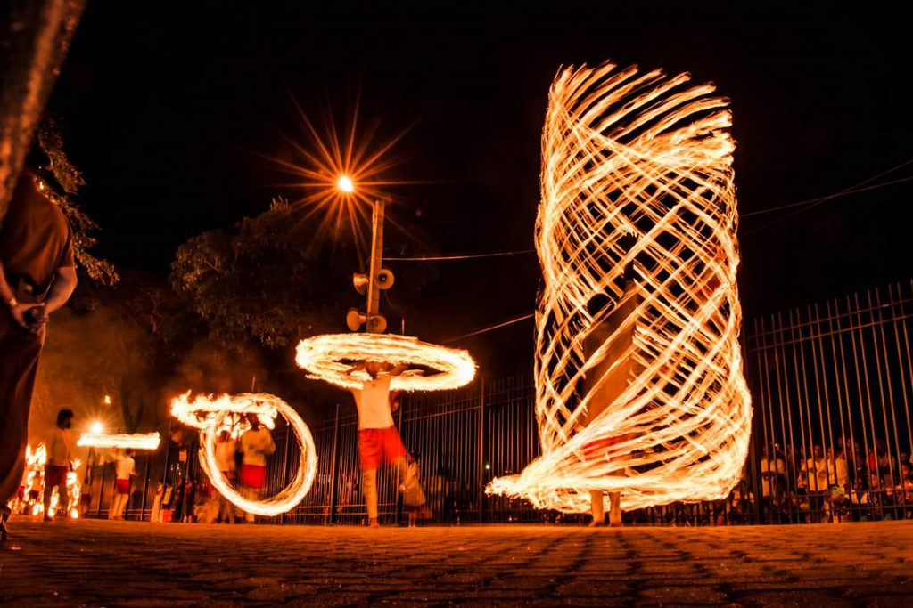

Reasons Why You Should Visit Sri Lanka
Sri Lanka is a great place to visit for water sport and wildlife enthusiasts and a haven for history
buffs.
As well as a guide to some of the best things to see and do in Sri Lanka, we’ve picked a selection of
places
to stay to help you put together your travel plan. Or, if you’d prefer not to have to think about
constructing your own itinerary, consider joining Culture Trip’s specially curated 12-day Sri Lanka
tour,
led by our local insider.

A tropical climate all year round
Sri Lanka experiences two monsoon seasons, which affect different parts of the country during different
months. This means that, at any given time, travellers can expect a sunny climate somewhere on the
island.
The southwest monsoon is between May and July, which leaves the north rain-free, and the northeast
monsoon
is between October and January, which leaves the south ready to be explored.
Make the most of the weather with a stay at one of the best luxury hotels in Sri Lanka.

Amazing food
Sri Lanka is blessed with a distinctive cuisine flavoured with exotic spices. The famed rice and curry
spread includes an intense and fragrant lentil and chicken or fish curry with rice and vegetables on the
side. The fish curry is highly recommended by locals. Kottu is a popular street food of Tamil origin
with
chopped roti flatbread and usually egg, meat, vegetables and salna — a spicy sauce on the side. Make
sure
you try egg hoppers too.

Rare land animals
Sri Lanka has 26 national parks and two marine parks. The most well known, Yala National Park, has the
highest density of leopards in the world, 215 species of bird, mugger crocodiles and other reptiles,
while
the coastline bordering the park is a nesting spot for five species of sea turtle. Adjacent to Yala is
Udawalawe National Park, home to herds of elephants and rare birds such as the changeable hawk-eagle and
the serpent eagle.
Pigeon Island attracts many travellers looking to experience the marine life surrounding the island. The
reef off the island consists of about 100 species of colourful corals and up to 300 species of reef
fish, making snorkelling in these waters an incredible experience.

Glorious beaches
Sri Lanka has some of the most pristine coastline in Asia, with many unspoiled sandy beaches with palm
trees and turquoise waters. Head to Mirissa if you’d like to soak up the sun in peace, while Unawatuna
is better suited for those in the mood for beach parties. For adrenaline junkies, Bentota, with water
activities such as kitesurfing and para-cycling, is the place to be.
Make sure you check out the best beach resorts in Sri Lanka to help you decide where to stay.

Whales and dolphins
Sri Lanka is probably the only place in the world where you can view a species of both the world’s
largest land mammal, the elephant, and the largest water mammal, the blue whale. Five species of whale,
including the blue whale and the minke whale, are regularly seen in the seas off Kalpitiya. If you’re
lucky, you’ll be able to spot spinner dolphins too. The peak months for whale watching in Kalpitiya are
between January and March.

Gorgeous landscapes and hiking trails
Sri Lanka’s abundance of flora and fauna means it has beautiful nature trails, with stunning vistas and
waterfalls, misty mountains rising into the clouds, hillsides covered with paddy fields and tea estates
and the occasional peacock or deer crossing your path. For beginners, the Demodara Rail Hike in Ella is
a great option that takes hikers past Nine Arches Bridge, a colonial-era viaduct. More experienced
hikers should consider going to Kirigalpotha or the Knuckles Mountain Range, widely regarded as the most
beautiful hiking trail in the country.
To make the most of all the things to do in Ella, you should book a stay at one of these hand-picked
hotels.

Super surfing
Easy access to the waves, the great number of sand-bottom breaks and the ever-consistent swells have
made Sri Lanka a popular surfing destination. Arugam Bay is arguably the best spot for surfing and
regularly hosts international competitions such as Red Bull Ride My Wave. Not only does it have the best
swells, but the wide range of choices means there are plenty of options for both novices and experienced
surfers. Many other coastal towns, such as Hikkaduwa, offer great surfing opportunities too.
If you’re looking for a place to stay in Hikkaduwa, check out this list of the best hotels for every
traveller.

Millennia of Buddhist heritage
Buddhism has played a key role here over the centuries and there are several ancient temples dotted
throughout Sri Lanka. These ancient places of worship often feature inspiring architecture and designs
that were far ahead of their times. The most well-known example is the Temple of the Tooth, though the
Jaya Sri Maha Bodhi (a sacred fig tree in Anuradhapur) and the Ruwanwelisaya stupa, are also
must-visits.

Intriguing colonial history
Dubbed Little England, Nuwara Eliya is a sleepy town in the tea country hills of central Sri Lanka. Full
of colonial-era buildings and bungalows, Tudor-style hotels and well-manicured hedges and gardens,
Nuwara Eliya gives the impression of a town from a bygone era and though small, it offers plenty to see
and do. You can drop by the massive Gregory Lake for water activities and a lakeside barbecue, or visit
Horton Plains, a beautiful grassland with rolling plains, waterfalls and the dramatic escarpment known
as World’s End.
A stay in the 19th-century Grand Hotel in Nuwara Eliya is recommended.

An elephant get together
During the months of May to September, the retreating banks of a 1,700-year-old reservoir make for the
most astonishing sight. Around 400 Asian elephants gather by the lake at Minneriya National Park to
feed, socialise and frolic in the water. It is thought to be the largest gathering of this species of
elephant in the world. The park has plenty more to see in the form of deer, purple-faced langur monkeys
and a variety of birdlife.

The Cultural Triangle
The Cultural Triangle is a trove of ancient cities, relics and religious monuments showcasing early Sri
Lankan civilisation. The triangle consists of the area between three cities – Kandy, Anuradhapura and
Polonnaruwa. Visitors can find Sigiriya, an ancient rock fortress, the cave temples of Dambulla and
Mihintale, which is the birthplace of Buddhism in Sri Lanka. There are also lesser-known but culturally
important attractions such as Yapahuwa, a medieval citadel which was briefly the capital of Sri Lanka in
the 13th century.
There are a range of places to stay in the Cultural Triangle, from boutique hotels in Kandy to hotels in
Dambulla.
